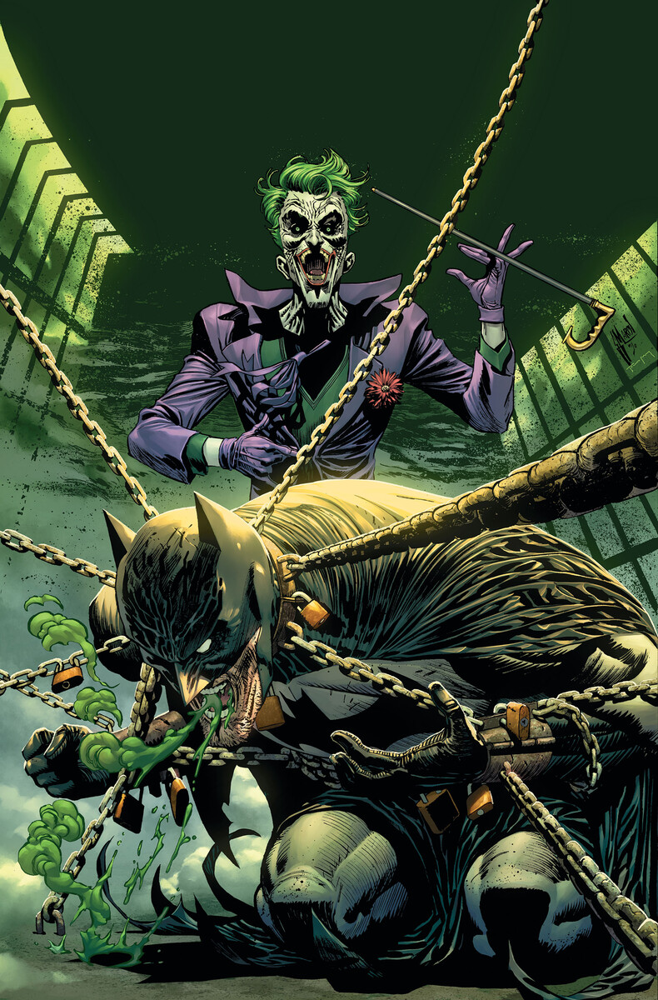

The Most Popular & Fun Card Games to Play, Ranked
- Card Games Rules & Instructions - Games and Puzzles and ...
If you're tired of playing card games, other popular card games include Magic: The Gathering, Yu-Gi-Oh, Pok émon, and others. There are numerous fun card games, each with their own rules and gameplay such as two-player card games, drinking games, fun card games for 3 and multi-player card games allowing plenty of choices for everyone. - Free Card Games Online - Play Hearts, Bridge, Spades and ...
Play card games for free whenever you like--when at work, school, or home--and make all your friends jealous with your ever-increasing solitaire skills! Klondike Solitaire is the most popular card game around. Card Game Solitaire does it better than the rest offering smooth game play and an undo button! - CardGames.io - Play all your favorite classic card games.
Free Online Card Games. iCardGames.com has a huge collection of over 100 card games in a variety of different Genres. Below is a subset of the games on this site. For more games, see our full list of card games. Trick Taking Card Games. In all trick taking card games, each hand is centered around a series of rounds which are called "tricks". - The Most Popular & Fun Card Games to Play, Ranked
Here is a collection of our top card games for you to play. These include the famous Freecell Solitaire, the extremely addictive Classic Solitaire, the ultra fun Solitaire Classic and 254 more! - Free Online Card Games | Play Card Games for Free Online
CardGames.io is a game site focused on classic card and board games. Our goal is to make great versions of the games you already know and love in real life. We try very hard to make the games simple and easy to use, and hope you enjoy playing them as much as we enjoy making them 🙂. - 40+ Great Card Games For All Occasions – PlayingCardDecks.com
Yes, that game. Our extensive collection of free online card games spans 10 classic solitaire titles, as well as several other best in class card games including 2 classic versions of Bridge, Classic Solitaire, Canfield Solitaire, and Blackjack, to name a few. - Card Games - Play Card Games on Free Online Games
Trick-Taking Games Trick taking games are one of the most common types of card games, and classics like Hearts and Spades are good examples. It is a game where players all have a hand of cards, and game-play revolves around a series of "tricks", in which each trick involves everyone playing one card from their hand, with the trick typically going to the person who played the highest card. - Card Games
This is the category where you'll find lots of classic card games including various different styles of Solitaire along with Hearts, Blackjack, Poker (including the fantastic Governor of Poker series), and even Uno. Plus, you can enjoy themed versions of all of these classics. They're a great way to celebrate holidays or other special occasions. - Card Games You Can Play and Enjoy Online Today
A full listing of card games that are available today such as Solitaire and Bridge. Find the card game that is best for you and play now for free! - Card Game Solitaire
Card games are more than a rainy day past time. They refine mental skills like logic, observation, and memory. Whether it's a solo game of solitaire or a fast paced multi-player game, card games are enjoyed the world around.
vote on everything entertainment movies celebrity comedy horror behind the scenes nostalgia watchworthy music rock hip hop country metal pop music singers albums music history nerdy gaming comics anime cartoons toys tech space science sports nfl soccer nba baseball hockey college sports combat sports athletes living beauty fashion family relationships pets home career automotive history politics world history us history royalty war mysteries historical figures ancient history culture art travel books deep thoughts LGBTQ astrology funny social media food cooking beverages libations fast food snacks restaurants healthy eating secret menu items channels Watchworthy Total Nerd Weird History Button Mash Graveyard Shift Anime Underground Weird Nature Unspeakable Crimes Weirdly Interesting 39 LISTS Game Night Ranking the best board games and card games for fun interactive competition with family, friends, and future frenemies. Photo: Popular Opinion 27.5k voters
The Most Popular & Fun Card Games
Originally by Ranker Community Updated June 24, 2020 88.6k votes 27.5k voters 1.8m views 73 itemsList Rules Standard playing card games and other card-based games.
Need a fun card game for a family party or friendly get together? You have to try some of the card games listed below. Whether you're playing poker professionally or simply enjoying a casual game of Go Fish with the family, the most fun card games provide hours of entertainment for all ages. If you're tired of playing card games, other popular card games include Magic: The Gathering, Yu-Gi-Oh, Pok émon, and others.
There are numerous fun card games, each with their own rules and gameplay such as two-player card games, drinking games, fun card games for 3 and multi-player card games allowing plenty of choices for everyone. Perhaps the best part is that many card games can be played nearly anywhere with only a standard deck of playing cards.
Though there is a bit of debate as to the origin, many historians believe that playing cards were invented in China during the 9th century. The first card game followed soon after, as did hundreds of other card games.
What are the best card games? Names of the most fun card games include simple games like solitaire or Cards Against Humanity and strategic card games like poker or euchre. But which card game is the most fun? You be the judge! Add names of card games to this list and vote for your favorite games below. Photo: ...more 1 4,714 2,327
UNO
2 1,534 604
Poker
Card game 3 1,493 832
Spoons
4 3,293 2,034
Blackjack
5 2,654 1,525
Cards Against Humanity
Party game 6 1,190 495
Exploding Kittens
7 1,909 1,267
Magic: The Gathering
Collectible card game 8 1,136 752
Rummy
9 836 494
Speed
10 2,256 1,724
Hearts
11 968 684
Apples to Apples
12 604 390
Monopoly Deal
13 1,889 1,524
Gin Rummy
Matching game 14 1,624 1,236
War
15 213 97
Texas Holdem
16 545 399
Skip Boo
17 2,512 2,173
Solitaire
Card game 18 1,050 780
Yu-Gi-Oh! Trading Card Game
Collectible card game 19 1,245 1,027
Crazy Eights
20 1,727 1,507
Go Fish
21 925 735
Phase 10
22 1,358 1,128
Assh*le
23 1,090 1,113
Pokémon Trading Card Game
Collectible card game 24 743 669
Cribbage
25 1,212 1,200
Euchre
LOAD MORE next list poll Popular Opinion Board/Card Games Games MORE POPULAR LISTS The Best R-Rated Chinese Movies Who Is The Most Famous Henry In The World? 'The Lion King' Fan Theories That Just Might Be True 25 'Witcher 3' Quotes That Are So Good Dandelion Wishes He Wrote Them The Best Donquixote Doflamingo Quotes The Best Utah Utes Quarterbacks of All Time Top 10 Current Queries in Board/Card Games:  dane cook 2018 best jeezy songs is psych on netflix pokemon go deaths top 10 electronic stores nudist colony laws rescue hero 13 who is mgk dating songs with the name michael in it mary and child art contact us we're hiring create a list watchworthy listopedia terms privacy sitemap © Ranker 2021